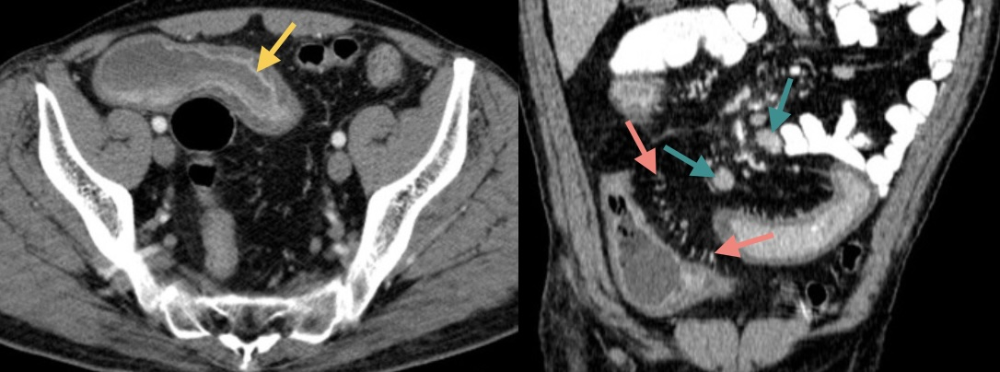

Douleurs abdominales
Fiches LiSA : douleurs abdominales, lithiase biliaire, ulcère gastro-duodénal, pancréatite aiguë, pancréatite chronique, appendicite, diverticulite, MICI, ischémie intestinale et traumatisme abdominal
Douleurs biliaires 
- Echographie de la vésicule biliaire
- Parois vésiculaires épaissies et feuilletées
- Calcul de 14 mm enclavé dans le collet (cône d'ombre postérieur)
 Le signe principal est la douleur au passage de la sonde échographique
Le signe principal est la douleur au passage de la sonde échographique
- Cholangio-IRM et séquences T2 coronale, axiale et oblique
- Dilatation du cholédoque et des voies biliaires intra-hépatiques
- Innombrables calculs millimétriques dans la vésicule biliaire
- Empierrement cholédocien : calculs enclavés dans sa partie distale
Triade douleur - fièvre - ictère apparaissant successivement sur 48h
Douleurs épigastriques
Perforation d'ulcère gastrique
- Scanner abdomino-pelvien injecté au temps veineux
- Pneumopéritoine sus-mésocolique et épanchement périhépatique
- Défaut de rehaussement focal de la petite courbure gastrique

- Scanner abdomino-pelvien injecté au temps veineux
- Elargissement diffus du pancréas
- Infiltration liquidienne péripancréatique, mésentérique et pararénale ant. bilatérale

Gravité = TDM à J3-J5 (score CTSI : nécrose pancréatique et collections)
- Scanner abdominal sans injection
- Innombrables calcifications disséminées dans le pancréas

FDR = consommation importante d'alcool pendant > 10 ans et tabagisme
Douleurs intestinales 
- Echographie de la fosse iliaque droite
- Appendice de naissance latéro-cæcal interne
- Base appendiculaire fine contrastant avec un élargissement de sa pointe
- Hypervascularisation Doppler au pourtour de la pointe
Le signe principal est la douleur au passage de la sonde échographique
- Scanner abdomino-pelvien sans injection
- Infiltration de la graisse en flanc gauche autour d'un diverticule colique
- Pas d'épanchement, de collection péritonéale, ni de pneumopéritoine

Diverticulite non compliquée = traitement symptomatique en ambulatoire
- Scanner abdomino-pelvien après ingestion et injection au temps veineux
- Epaississement pariétal de l'iléon distal avec rehaussement de la muqueuse
- Aspect « en peigne » des vaisseaux mésentériques traduisant une hyperhémie
- Adénomégalies mésentériques

- Scanner abdomino-pelvien sans puis après inj. aux temps artériel et veineux
- Thrombose de l'artère mésentérique supérieure (cf. arrêt brutal en sagittal MIP)
- Défaut de rehaussement des anses iléales (au temps veineux)
- Aéroportie
Quiz
Homme de 25 ans, traumatisme lors d'un match de football
- Scanner abdomino-pelvien après inj. aux temps artériel et veineux
- Hémopéritoine de grande abondance
- Lacérations spléniques s'étendant d'un bord à l'autre
- Atteinte du hile splénique sans saignement actif décelable
 Rupture traumatique de la rate
Rupture traumatique de la rate